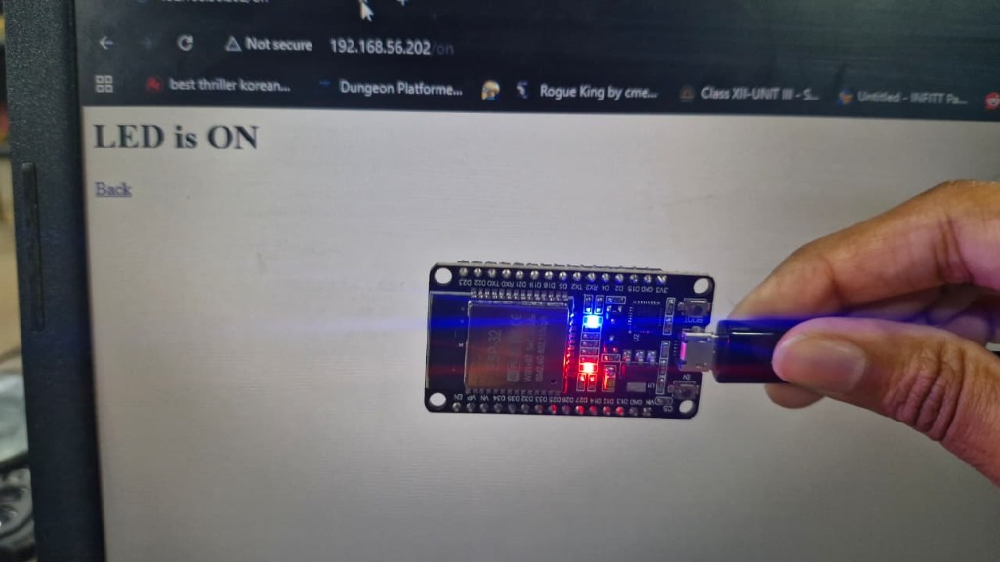
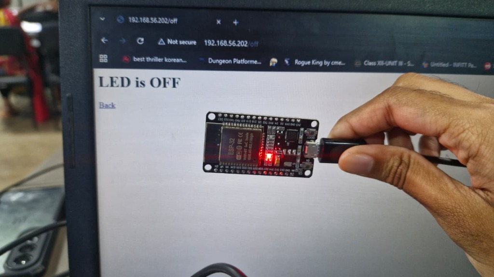
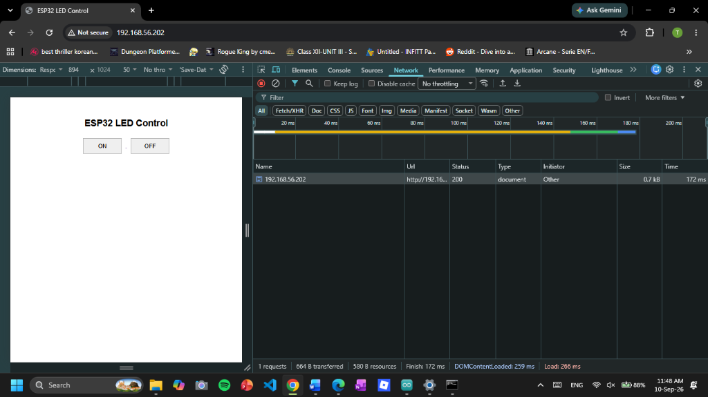
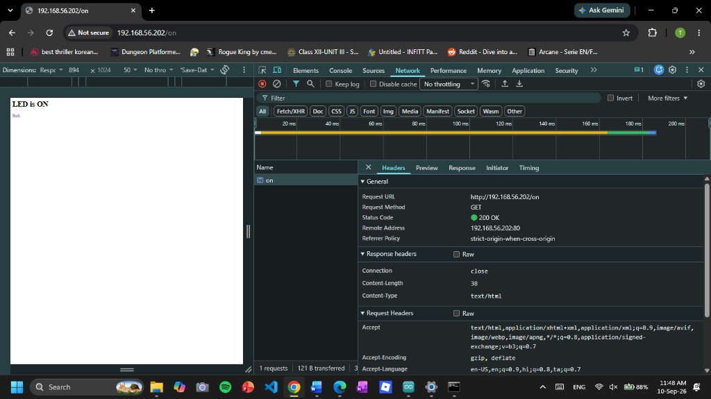
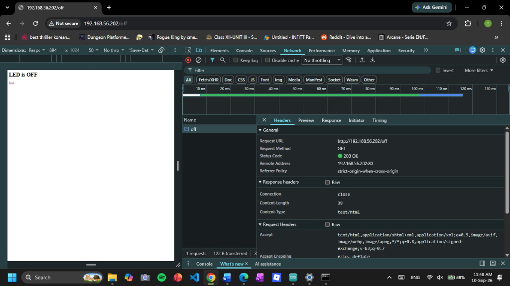

Objective
- To develop a basic IoT-based LED control system using the ESP32.
- To configure the ESP32 as a web server over a Wi-Fi network.
- To create a simple web-based interface for controlling the LED.
- To enable the user to turn the LED ON and OFF remotely through a web browser.
Problem Being Addressed
- Traditionally, an LED connected to a microcontroller is controlled using a physical switch, push button, or predefined program logic.
- This project demonstrates a more convenient method of controlling the LED remotely through a web browser.
- It eliminates the need for a physical button and allows the LED to be controlled over a Wi-Fi network.
Project Summary
- The ESP32 is connected to a Wi-Fi network and configured to function as a local web server.
- The ESP32 hosts a simple web interface containing ON and OFF control buttons.
- When the user enters the ESP32's IP address in a browser, the control webpage is displayed.
- Selecting ON or OFF sends an HTTP request to the ESP32.
- The ESP32 receives the request and changes the LED state accordingly.
- This provides a simple example of wireless device control using an ESP32 web server.
What I Learnt
The ESP32 hosts a webpage locally, and the user accesses that webpage through a browser to monitor or control the ESP32 without depending on the internet or cloud services.
Browser Interaction Lifecycle (Graphical Cycle)
Continuous closed-loop HTTP request-response transaction cycle
ESP32 as a Web Server
The ESP32 can act as a small, self-contained web server that hosts a web page directly from its memory.
Communication over Wi-Fi
The ESP32 connects to a Wi-Fi network and communicates with a web browser using standard HTTP requests and responses.
Embedded Micro-Server Paradigm
The ESP32 acts as an embedded micro web server, allowing users to monitor or control the device through a browser.
HTML Stored in Program Flash
The webpage, including HTML, CSS, and JavaScript, can be stored in the ESP32's program flash memory and served directly to the browser.
No Internet Dependency
The system does not require the internet, AWS, or third-party cloud services for basic local operation.
Real-Time Device Control
A web interface can be used to control ESP32-connected components such as LEDs, relays, motors, and sensors.
Commercial Applications
This embedded web server approach forms the basis of many production edge IoT systems
Smart Plugs
Localized web config interfaces for appliance power switching and energy metering.
Consumer TechLocal Device Gateways
On-premise edge bridges converting sensor telemetry and fieldbus protocols.
Edge InfrastructureIndustrial HMIs
Direct web-based machine control dashboards and diagnostics right on machinery.
Industry 4.0Home Automation Controllers
Zero-cloud edge hubs for lights, HVAC dampers, relays, and security interlocks.
Smart HomeSensor Monitoring Systems
Standalone telemetry nodes serving environmental metrics directly to web clients.
Telemetry & LoggingPhysical Hardware Testing

● GPIO 2 : HIGH (ON)Active State: ON - Route Verification
- Laptop browser visits
192.168.56.202/on. The ESP32 executeshandleLEDOn(), driving GPIO 2 HIGH. The bright onboard blue SMD LED illuminates while the screen renders "LED is ON" with a return link.

○ GPIO 2 : LOW (OFF)Inactive State: OFF - Route Verification
- Accessing
192.168.56.202/offtriggershandleLEDOff(), driving GPIO 2 LOW. The blue indicator LED immediately shuts down while the red rail LED remains active.
Live Browser Interface & Chrome DevTools Network Telemetry
Inspecting real-time HTTP GET request/response cycles directly over local Wi-Fi (192.168.56.202)

● GET / : 200 OK1. Main Web Control Console (GET /)
When the user enters the ESP32's IP address, such as http://192.168.56.202, in a web browser, the ESP32 webpage opens with ON and OFF buttons to control the LED.
How It Works:
- The browser sends a request to the ESP32.
- The ESP32 receives the request and sends back the HTML webpage.
- The webpage is stored in the ESP32's internal memory.
- The user can then press the ON or OFF button to control the LED.
Working:
Browser → Wi-Fi → ESP32 → Webpage → ON/OFF Button → LED Control
Network Result:
The browser receives a 200 OK response, which means the webpage was successfully loaded from the ESP32.

● GET /on : GPIO 2 HIGH2. Activating Built-in LED (GET /on)
When the user clicks the ON button on the webpage, the browser sends a request to the ESP32 using GET /on. The ESP32 receives this command and sets GPIO 2 to HIGH (3.3V), which turns on the built-in LED. After turning on the LED, the ESP32 sends a simple webpage back to the browser showing “LED is ON” along with a link to return to the main page. The 200 OK status confirms that the ESP32 successfully received and processed the command.

○ GET /off : GPIO 2 LOW3. Deactivating Built-in LED (GET /off)
When the OFF button is pressed, the browser sends the /off command to the ESP32. The ESP32 receives the command and turns GPIO 2 to LOW, which switches off the built-in LED. In the Inspect → Network tab, the /off request can be seen with a 200 OK status, showing that the command was successfully received. The response also displays “LED is OFF”, confirming that the LED has been turned off.
Interactive Embedded Server Sandbox
[BOOT] ESP32 Dev Module Initialized
[WIFI] Connecting to WiFi: protosem .....
[WIFI] WiFi connected!
[NET] ESP32 IP address: 192.168.56.202
[HTTP] Web server started on Port 80!
[PIN] pinMode(2, OUTPUT) | Initial State: LOW (0.0V)
[READY] Awaiting client HTTP GET requests...Circuit Architecture
Dual-Core 240MHz SoC
- Integrated 2.4GHz 802.11 b/g/n Wi-Fi transceiver
- Dual 32-bit Xtensa LX6 microprocessors
- Built-in blue indicator SMD LED tied directly to GPIO 2
GPIO 2 (Digital Pin D2)
- Operating logic level: 3.30V (HIGH) / 0.00V (LOW)
- Internally connected to the onboard blue LED on the PCB
- Zero external breadboard wiring or jumper cables required
Internal SMD Resistor
- Pre-soldered on the DevKit PCB between GPIO 2 and LED
- Safeguards the IO driver automatically from excess current
- No discrete resistors or external components needed
| ESP32 Internal Pin | Target Component | Connection Type | Signal / Purpose |
|---|---|---|---|
| GPIO 2 (D2) | Onboard Blue SMD LED (Built-in) | Internal PCB Copper Trace | 3.3V Switched Digital Logic (HIGH = ON, LOW = OFF) |
| GND | Onboard LED Cathode Return | Internal PCB Ground Plane | Common System Ground (0V Reference) |
| Micro-USB | PC USB Port / 5V Supply | Standard USB Data/Power Cable | Regulated 5V DC Supply & 115200 Baud Flashing Line |
ℹ️ Hardware Architecture: Built-in LED circuit — GPIO 2 is internally connected to the LED on the ESP32 DevKit V1 board. No external components or breadboard wiring are needed for this task.
Core Firmware Architecture, Code Breakdown & Serial Monitor
#include <WiFi.h>
#include <WebServer.h>
const char* ssid = "protosem";
const char* password = "Proto#123";
#define LED_PIN 2
WebServer server(80);
void handleRoot()
{
String html = R"rawliteral(
<!DOCTYPE html>
<html>
<head>
<title>ESP32 LED Control</title>
<meta name="viewport" content="width=device-width, initial-scale=1">
<style>
body { font-family: Arial; text-align: center; margin-top: 80px; }
h1 { font-size: 35px; }
button { width: 150px; height: 60px; font-size: 22px; margin: 15px; cursor: pointer; }
</style>
</head>
<body>
<h1>ESP32 LED Control</h1>
<a href="/on"><button>ON</button></a>
<a href="/off"><button>OFF</button></a>
</body>
</html>
)rawliteral";
server.send(200, "text/html", html);
}
void handleLEDOn()
{
digitalWrite(LED_PIN, HIGH);
server.send(200, "text/html", "<h1>LED is ON</h1><a href='/'>Back</a>");
}
void handleLEDOff()
{
digitalWrite(LED_PIN, LOW);
server.send(200, "text/html", "<h1>LED is OFF</h1><a href='/'>Back</a>");
}
void setup()
{
Serial.begin(115200);
pinMode(LED_PIN, OUTPUT);
digitalWrite(LED_PIN, LOW);
// Connect to Wi-Fi
WiFi.begin(ssid, password);
Serial.print("Connecting to WiFi");
while (WiFi.status() != WL_CONNECTED)
{
delay(500);
Serial.print(".");
}
Serial.println();
Serial.println("WiFi connected!");
Serial.print("ESP32 IP address: ");
Serial.println(WiFi.localIP());
// Web server routes
server.on("/", handleRoot);
server.on("/on", handleLEDOn);
server.on("/off", handleLEDOff);
server.begin();
Serial.println("Web server started!");
}
void loop()
{
server.handleClient();
}Code Breakdown
1. Including Necessary Libraries
WiFi.henables the ESP32 to connect to local Wi-Fi networks and communicate over wireless signals.WebServer.hprovides the built-in HTTP server capabilities to listen for web browser connections.
2. Wi-Fi Credentials & Pin Declaration
ssidandpasswordhold the local Wi-Fi network name and password for connection.#define LED_PIN 2identifies GPIO 2 as the pin connected to the onboard blue LED.
3. Web Server Object Creation
- Creates a web server instance named
server. - Configures it to listen on standard HTTP port
80, which web browsers use by default.
4. Webpage Handler Functions
handleRoot()sends the main HTML webpage with ON and OFF buttons to the browser.handleLEDOn()drives GPIO 2 HIGH to turn ON the LED and sends an HTML confirmation.handleLEDOff()sets GPIO 2 LOW to turn OFF the LED and sends an HTML confirmation.
5. Continuous Client Listening Loop
server.handleClient()runs repeatedly hundreds of times per second.- It checks if any browser clicked a button or visited a link, immediately handling the request without freezing.
Serial Monitor Telemetry & Terminal Log
Live serial communication output captured over USB COM7 at 115200 baud
[BOOT] ESP32 Dev Module Initialized
Connecting to WiFi.....
WiFi connected!
ESP32 IP address: 192.168.56.202
Web server started!
[CLIENT 192.168.56.105] GET / HTTP/1.1 -> 200 OK (Served HTML UI)
[CLIENT 192.168.56.105] GET /on HTTP/1.1 -> 200 OK (digitalWrite GPIO 2 HIGH -> LED ON)
[CLIENT 192.168.56.105] GET /off HTTP/1.1 -> 200 OK (digitalWrite GPIO 2 LOW -> LED OFF)Reflection
This task provided me with a better understanding of how an IoT-based web control system works. I understood how a web browser communicates with the ESP32 through HTTP requests and how buttons on a webpage can be used to control a physical LED.
Challenges Faced
Challenge 1 — Wi-Fi Connection Issue
The ESP32 initially had trouble connecting to the Wi-Fi network. The Wi-Fi details were checked and the ESP32 was restarted. After reconnecting, it received an IP address successfully.
Challenge 2 — LED Control Issue
The LED did not respond properly to the webpage commands. The GPIO settings and ON/OFF commands were checked and corrected. After this, the LED worked as expected.